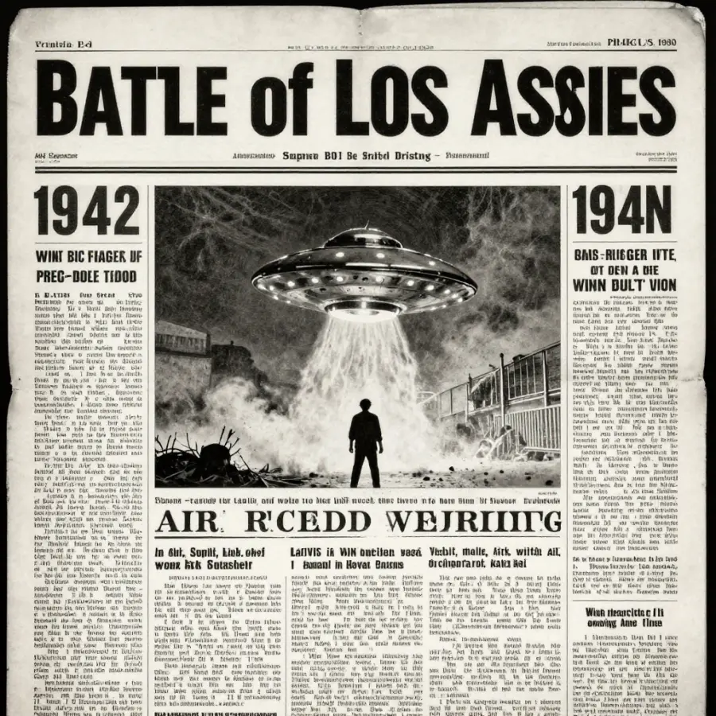

The Phoenix Lights: Arizona's Massive 1997 UFO Sighting

Thousands of witnesses watched this V-shaped formation of lights silently traverse the Arizona sky on March 13, 1997.
On the evening of March 13, 1997, something extraordinary happened in the skies above Arizona. Thousands of people — from suburban families to airline pilots to police officers — looked up and saw a massive, V-shaped formation of lights silently gliding across the sky. The formation was reported to be up to a mile wide.
It wasn't a single sighting. Reports came in from Nevada, through Phoenix, and down to the Arizona-Mexico border, spanning hundreds of miles over several hours. The event became known as the Phoenix Lights — and it remains one of the most widely witnessed unexplained aerial phenomena in history.
Overview
What Happened That Night?
The Phoenix Lights event actually involved two separate phenomena that occurred on the same evening. Here are the key details:
- ⏰ The first sightings began around 6:55 PM in Henderson, Nevada
- 🔺 Witnesses described a massive V-shaped or boomerang-shaped craft with five to seven bright lights
- 🤫 The object moved completely silently — no engine noise, no sonic boom
- 📏 Some witnesses estimated the formation was up to one mile across
- 👀 The National UFO Reporting Center received hundreds of reports that night
- 🎥 Multiple people captured video footage of the lights over Phoenix
The sightings fell into two categories: the earlier V-shaped craft seen traveling across the state, and later a series of stationary lights that hovered over Phoenix itself before slowly vanishing one by one.
On March 13, 1997, countless Phoenix residents stood in their yards and parking lots watching the mysterious lights overhead.
🏛️ The Governor Who Saw the Lights
Arizona Governor Fife Symington was one of the witnesses. At a 1997 press conference, he mocked the sighting by having an aide dress in an alien costume. But ten years later, in 2007, Symington publicly admitted: "I'm a pilot and I know just about every machine that flies... it was bigger than anything that I've ever seen."
Evidence
The Phoenix Lights case is compelling because of the sheer volume and quality of witnesses. Unlike most UFO reports, this event was seen simultaneously by thousands of people across a wide geographic area, including trained observers.
Key Witness Testimonies
Timothy Ley, retired airline pilot: Ley and his family watched the V-formation pass directly over their home in Phoenix. He described it as a solid craft with lights underneath, estimating it blocked out stars as it passed overhead — indicating it was a single physical object, not separate lights.
Multiple police officers: Law enforcement officers from several jurisdictions reported seeing the lights. Their dispatch records from that evening document the calls.
Truck drivers and highway travelers: Reports came in from Interstate 17 and Interstate 10, with drivers pulling over to watch the lights pass overhead.
Video evidence: Several residents captured the lights on camcorder. The most famous footage, shot by a Phoenix resident, shows a series of bright lights hovering over the city. Analysis of these videos has been inconclusive but rules out many conventional explanations.
Competing Explanations
As with any major unexplained event, multiple theories have been proposed. The official explanation has satisfied some witnesses but not others.
The Military Flare Theory
The U.S. Air Force attributed the stationary lights seen over Phoenix to A-10 Warthog aircraft dropping illumination flares during training exercises at the Barry M. Goldwater Range. The Maryland Air National Guard's 175th Wing confirmed they were conducting flare exercises that night. Luke Air Force Base stated the flares would have been visible from Phoenix.
However, this explanation only addresses the stationary lights over Phoenix, not the earlier V-shaped craft seen traveling across the state. The flare theory also fails to explain why the lights appeared to hover in formation for extended periods without descending as flares would.
Unknown Craft or Technology
Some researchers suggest the V-shaped formation could represent a classified military aircraft or experimental technology. The 1990s saw significant development in stealth and advanced aviation, though no known aircraft matches the size and silence described by witnesses.

The Phoenix metropolitan area, where the most dramatic sightings occurred on the night of March 13, 1997.
📡 The 2007 Reappearance
Exactly ten years after the original sighting, in February 2007, mysterious lights appeared over Phoenix again. A local man later claimed responsibility, saying they were road flares attached to helium balloons. But many witnesses rejected this explanation, noting differences in the light patterns and behavior from the 1997 event.
Open Questions
The Phoenix Lights remain classified as unexplained because the official military flare explanation only addresses part of the event, and the earlier V-shaped craft sighting has never been adequately explained.
What Remains Unresolved
If the stationary lights over Phoenix were military flares, what was the V-shaped craft seen by witnesses in Nevada, northern Arizona, and along the path south to Tucson? The flare theory does not account for an object that traveled silently across hundreds of miles.
Why did the military not acknowledge the event for several months? The flare explanation was not offered until after intense public and media pressure, leading skeptics to question its completeness.
And perhaps most importantly: with thousands of credible witnesses, multiple video recordings, and official government attention, the Phoenix Lights stand as a powerful reminder that not everything in our skies can be easily explained — even when an entire city is watching.
📖 Recommended Reading
Want to learn more? Check out The Phoenix Lights by Lynne D. Kitei M.D. by Lynne D. Kitei M.D. on Amazon for a deeper dive into this fascinating topic. (As an Amazon Associate, we earn from qualifying purchases.)
References & Further Reading
- Wikipedia: Phoenix Lights — Detailed overview of the 1997 event
- Britannica: Phoenix Lights — 1997 UFO sighting in Arizona
- Arizona Republic: Phoenix Lights 20th Anniversary
Editorial note: We cross-check claims across multiple independent sources. See our Editorial Policy.